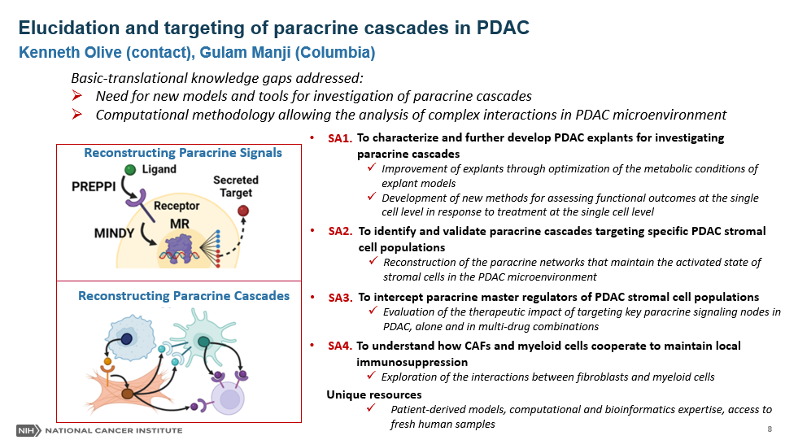

Pancreatic ductal adenocarcinoma (PDAC) is among the most lethal malignancies due largely to their lack of response to current cytotoxic, targeted, and immune therapies. PDAC tumor tissues harbor an expansive, desmoplastic stroma that both suppresses angiogenesis and limits perfusion and diffusion. Consequently, delivery of therapeutic agents through systemic administration is impeded, lowering drug efficacy and increasing general toxicity. Indeed, multiple components of the PDAC stroma support its survival and growth, for example by conditioning a locally immunosuppressed microenvironment that facilitates tumor survival. Conversely, we previously showed that at least some elements of the tumor stromal restrain PDAC growth and progression, for example Hedgehog pathway-responsive myofibroblasts. Early attempts to modulate the PDAC stroma in order to facilitate drug delivery failed upon clinical translation. Post-clinical trials ultimately demonstrated that stromal remodulation upon inhibition of individual pathways can lead to unpredictable consequences in multiple additional cell types. Based on these data, we hypothesize that individual paracrine pathways typically link together to form “paracrine cascades” that propagate through multiple pathways and cell types. We advance that reconstructing these paracrine cascades offers both the opportunity to better understand the consequences of therapeutic intervention and also to infer candidate targets that act on a broad range of cell types within the PDAC TME to enact stromal remodulation. In order to test this, we will make use of a series of innovative systems biology tools built by members of our transdisciplinary team. These include a suite of algorithms leveraging the computational field of regulatory network analysis, as well as technically innovative techniques for studying outcomes in single cell datasets. Moreover, we will acquire unique dataset from samples collected by members of our multidisciplinary clinical service at the Pancreas Center of New York Presbyterian Hospital. These include acquiring human PDAC tumor interstitial fluid and generating matched sets of tumor, normal pancreas, spleen, and blood samples from PDAC patients. We will also routinely utilize fresh PDAC tissue samples to make tumor “explants” a novel ex vivo model system for the short-term, medium throughput study of PDAC. This new model system enables the dissection of complex multi-cellular phenotypes in ways that are not possible through study of intact tumors or co-cultures of purified cell types Using these approaches, we will reconstruct the network of paracrine cascades in PDAC and validate selected candidates experimentally. We will also test a specific candidate pathway uncovered through study of the Hh pathway that connects myofibroblasts to myeloid derived suppressor cells and cytotoxic lymphocytes. We expect that the proposed studies will provide an expansive understanding of paracrine crosstalk in PDAC and also provide multiple valuable resources and techniques to the PSRC consortium. For more information click here

Ken Olive was raised in Mahwah, NJ, graduating from Mahwah High School in 1994. He attended Bucknell University in Lewisburg, PA where he majored in Biology and performed research in the laboratory of Dr. Mitchell Chernin. He received his Bachelor of Science in Biology in 1998 and was awarded the John T. Lowry Prize for the most outstanding graduate in biology. Upon joining the graduate program in Biology at MIT, he joined the lab of Dr. Tyler Jacks and studied the role of mutant p53 in tumorigenesis. For his thesis work, Olive developed two genetically engineered mouse models of Li-Fraumeni Syndrome and used these lines to demonstrate that mutant p53 have novel oncogenic properties. He also co-developed the “KP” model of non-small cell lung adenocarcinoma, now widely utilized in the lung cancer research field. After earning his PhD in 2005, Dr. Olive performed a postdoctoral fellowship the lab of Dr. David Tuveson, first at the University of Pennsylvania and later at the University of Cambridge in the United Kingdom. There he led an effort that determined that poor vascularity and perfusion interfere with drug delivery in pancreatic cancer and promote chemoresistance. He also demonstrated that the expansive desmoplastic stroma of pancreatic cancer contributes to these unusual properties.
In 2010, Dr. Olive joined the faculty of the Columbia University Herbert Irving Comprehensive Cancer Center in New York City, where he is now an Associate Professor of Medicine. He leads a research program that bridges from basic science studies on the interactions of tumor and stromal cells with the extreme physical microenvironment of pancreatic cancer, to translational and clinical studies of novel treatment for this challenging disease. Dr. Olive serves as Co-Leader of the Precision Oncology and Systems Biology program within the HICCC and he is also the founding Director of the Oncology Precision Therapeutics and Imaging Shared Resource. Within the Department of Medicine, Dr. Olive serves as the Director of GI Translational Research, working to nucleate transdisciplinary teams of investigators to tackle hard problems in GI Oncology and also supporting the development of junior faculty in the translational cancer research space.
Additional URL:
Kenneth P. Olive's Profile
The Olive laboratory
Gulam Manji, M.D., Ph.D. is an Assistant Professor of Medicine at Columbia University Medical Center. Dr. Manji received his M.D. degree from Ross University School of Medicine in 2009 and completed his residency in internal medicine at Albany Medical College. He then completed his fellowship in Hematology/Oncology at NewYork-Presbyterian/Columbia, where his clinical focus was on the treatment of gastrointestinal malignancies, melanoma, and sarcoma under the mentorship of Dr. Gary Schwartz, Chief of Hematology and Oncology.
Dr. Manji conducts translational research with the overall goal to developing new treatments for cancer. His focus is in gastrointestinal malignancies, particularly pancreas adenocarcinoma, on which he is conducting preclinical combination immunotherapy studies on genetically engineered mice with pancreas cancer in the Olive laboratory at the Herbert Irving Comprehensive Cancer Center. The combination immunotherapy preclinical proposal received the Young Investigator Award from the American Society of Clinical Oncology-2015. The goal of these preclinical studies is to bring promising new therapies to the clinic in an early phase clinical trials Dr. Manji's research career in identifying new genes and their implication in disease has led to numerous key publications and an issued patent.
Dr. Manji cares for patients with gastrointestinal malignancies, with a particular focus on pancreatic and liver cancers, and sarcomas. He is the principal investigator of an investigator-initiated multicenter clinical trial that he wrote with Dr. Gary Schwartz in sarcoma and malignant peripheral nerve sheath tumors and is responsible for clinical trials conducted in liver, bile duct, gallbladder, and pancreas cancers at Columbia University Medical Center.
Additional URL: Gulam Manji's Profile